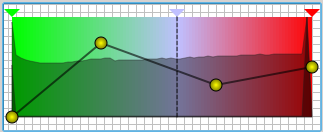

The main purpose of the Transfer Function 1D module is to provide an interface that allows the user to edit one-dimensional transfer functions.
The most important and also most complex of its properties is the Transfer Function property. The following image shows the property after the user has already done some editing.
The dark areas in the background are two different representation of the histogram of the dataset. One is a linear and one is a logarithmic version of the histogram. The histograms provide an overview of the data's value distribution.
The curve with the dots allows to manipulate the opacity assigned to different data values. The upside down triangles in the upper part are used to assign certain colors to the data values (colormap). The colors between the triangles are obtained by linear interpolation.
Both the curve and the colormap can be adjusted by moving either the the dots or the triangles with the left mouse button. New dots can be added by right-clicking into the colormap. New triangles can be added by right-clicking in the area above the colormap. Double-clicking with the left mouse button on one of the triangles opens a color dialog and thus allows to change the color assigned to the triangle. If the color dialog is open one can drag colors from the color dialog to the different triangles.